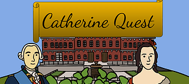

Portfolio
Numeral Operation (Game Jam)
Unity 2D, C# | Programmer, Designer, Artist
A puzzle game where adding and subtracting is the name of the game.

Echo Lost (Game Jam)
Unity 2D, C# | Programmer, Designer, Composer
A puzzle platforming game featuring Koko, a flightless bat that uses echolocation to find their way around.

Catherine Quest
Unity 3D, C# | Programmer, Designer
A minigame collection featuring Catherine the Great as she tries to form a coup against her husband.
My Story
Hello and welcome to my portfolio. I'm a 2nd year honors student at Northeastern University, enrolled in the Khoury College of Computer Science, studying computer science and game development. My main discipline is programming with basic experience in art and music, and I'm currently seeking internship opportunities in the games industry from May 2021 through December 2021.
Since starting my first project, I've participated in a few Game Jams and plan on entering many more, both for fun and for practice. While most of my projects so far were done in Unity, I'm interested in and actively learning more avenues of game development. For example, in my spare time, using C and gbdevkit to make Game Boy games.
I wasn't always as interested in gaming as I am now, though. Up to the age of seven, I spent all my time outside with my neighborhood friends, pretending sticks were swords and riding around the neighborhood on bicycles as if we were embarking on grand adventures. It seemed nothing could be more exciting.
When I turned seven, my dad introduced me to video games, and they absorbed my time. While children at that age tend to graduate to structured sports, this is where I took a different path.
Video games introduced me to worlds where kids went on magical adventures instead of going to school and warriors used music to pacify their foes. Gaming became the new imaginative outlet I needed, and all the visions I dreamed up were playing out on the screen right in front of my eyes.
Over the years, I have been able to turn my obsession into something more productive: creating video games. I started with easy-to-use software that didn't require a lot of programming knowledge. After all, video game programming was like learning a foreign language, so I spent less time focusing on that aspect and instead, concentrated on leveraging the platform's user interface to create small games that I thought were interesting. I was never able to complete a full-length game using this software though, as it didn't offer the creative freedom I would have liked, so I stopped this approach to game creation when I entered high school.
In high school, I decided to learn how to program video games. My school didn't offer programming classes for freshmen, so I used Khan Academy to teach myself JavaScript. Its online code compiler allowed me to create my first game from scratch, but I wasn't satisfied with its inflexibility for creating my own art or music. Additionally, I couldn't export my game, so I had to abandon it on the platform.
Finally, during the summer of my sophomore year, I found a program that not only fit all my needs but was also used to create some of the most popular games of recent years: Game Maker Studio 2.
Game Maker Studio 2 uses its own custom programming language called Game Maker Language (GML). It's very similar to JavaScript, so the switch between programs felt seamless. Using Game Maker Studio 2, I completed multiple projects that taught me a lot about efficient programming, game design, art, and even music composition.
I was even able to turn my love of game making into a temporary job through my home town's community education department. I started a class for middle school students teaching the basics of Game Maker Studio 2 and GML. My hope was to give students who wanted to create games the helping hand I didn't have.
Video game technology is improving at a rapid pace. Today's games delve into virtual reality, AI has become so complex that characters can "think" for themselves, and worlds are becoming so vast that they compare to cities the size of Boston. Looking forward, my goal is to become a part of this growing industry. I want to bring my childhood fantasies to life by working alongside those people who are creating the virtual worlds of tomorrow.